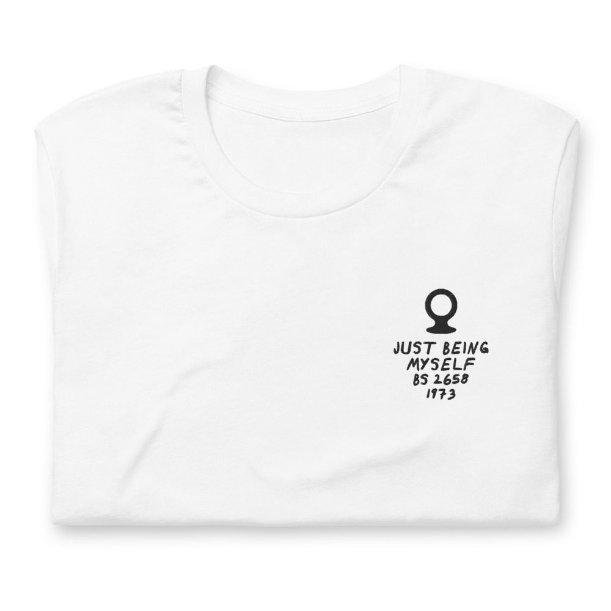
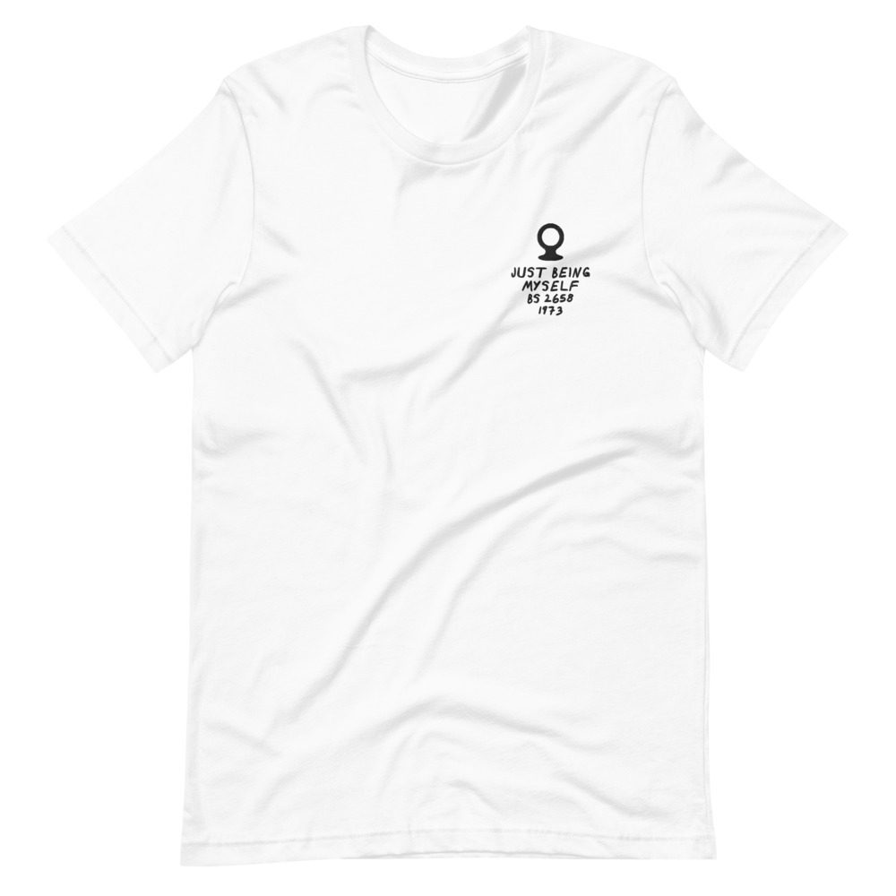

Dionne Warwicke – Just Being Myself
Produced by Holland–Dozier–Holland. Edge wear on the cover.
LP · Warner Bros. BS 2658 · 1973
Ungraded, checked before it ships
Comes with its own shirt: a white tee embroidered on the chest with its title, catalog number and year in my handwriting. Pick a size at checkout. It’s made for you and ships on its own.


Buy $65
Play a track
Side 1
- You’re Gonna Need Me4:20
- I Think You Need Love3:37
- You Are The Heart Of Me4:14
- I Always Get Caught In The Rain3:42
Side 2
- Don’t Let My Teardrops Bother You4:00
- (I’m) Just Being Myself4:31
- Come Back4:30
- Don’t Burn The Bridge (That Took You Across)4:24
Produced by Edward Holland, Jr., Holland & Dozier, Richard “Popcorn” Wylie, Ron Dunbar